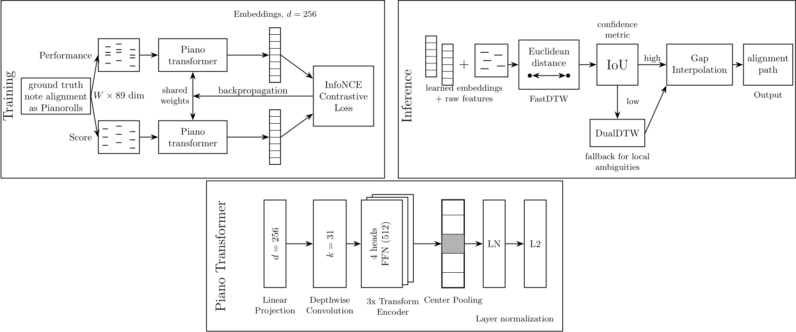
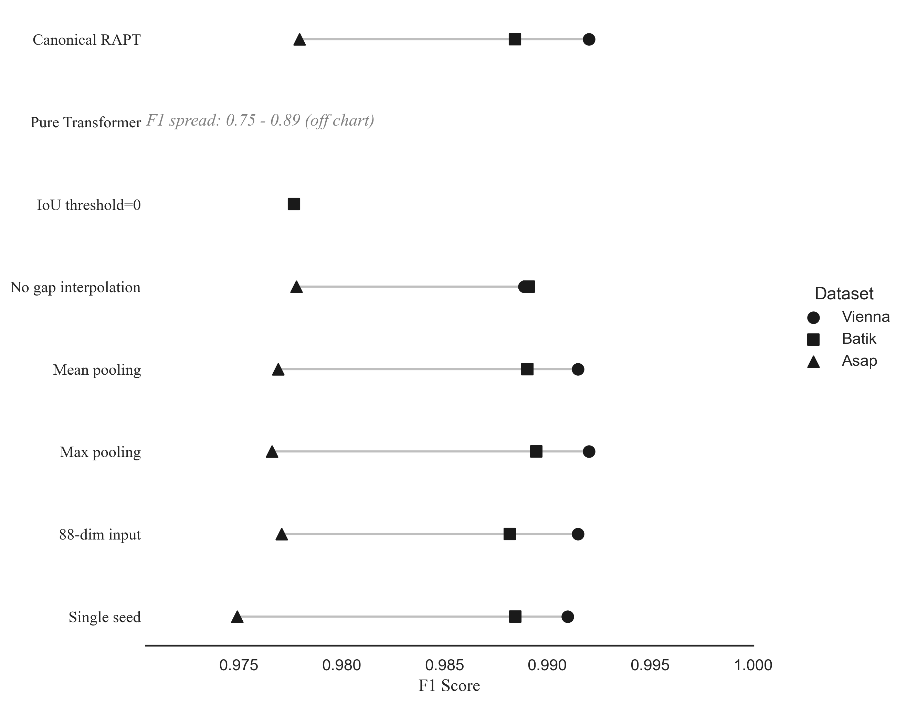

This study introduces RAPT (Robust Alignment via Piano Transformer), a score-to-performance framework for symbolic music alignment that combines Dynamic Time Warping (DTW) with learned semantic embeddings. The method acts as a contextual compass for the underlying DTW alignment: a lightweight Transformer encoder augments traditional pianoroll and onset features with global structural representations to navigate macro-level ambiguities, while a DualDTW baseline resolves locally uncertain regions. Experimental results show that RAPT achieves competitive performance on standard benchmark datasets and remains stable in challenging settings involving performance errors such as wrong notes, hesitations, and local timing deviations. Unlike conventional methods that rely on frame-level similarity alone, RAPT's encoder is trained contrastively on aligned score-performance pairs. The embeddings encode the surrounding musical context of each frame, helping the alignment to distinguish between locally similar frames that occur in different parts of the piece. At inference time, the learned embeddings are fused with pianoroll and onset features extracted from the score and the performance. The resulting feature sequences are then aligned using a DTW-based method, followed by additional refinement steps to resolve unmatched and uncertain regions.
RAPT extracts and fuses local pianoroll features with global semantic embeddings from a lightweight PianoTransformer. The network is trained using a contrastive alignment loss to map corresponding score and performance windows into a shared latent space. During inference, these robust representations guide a DualDTW backend through ambiguous or corrupted performance regions.

Figure 1: (Left) Contrastive training loop over score-performance pairs. (Middle) The PianoTransformer architecture projecting frames to semantic embeddings. (Right) Inference pipeline fusing local onset features with global embeddings prior to DualDTW alignment.
RAPT was evaluated across three major benchmark datasets (Vienna, Batik, and ASAP), comparing performance under both clean conditions and synthetically corrupted performance settings (wrong notes, omissions, and hesitations). RAPT demonstrated remarkable robustness on the ASAP dataset under severe corruption conditions.
| Dataset | Method | Clean F1 | Corrupt F1 | Degradation (Δ) |
|---|---|---|---|---|
| ASAP | Nakamura | 0.985 | 0.983 | -0.0020 |
| DualDTW | 0.988 | 0.985 | -0.0022 | |
| GlueNote | 0.970 | 0.965 | -0.0050 | |
| RAPT (Ours) | 0.990 | 0.990 | 0.0000 |
Explore a side-by-side comparison of the alignment path predicted by Nakamura (the previous state-of-the-art) versus our proposed RAPT method. The visualizer below mimics the Parangonada UI.
Chopin Ballade Op. 38, Pianist 11. Nakamura produces 16 alignment errors in the opening bars and final cadence. RAPT recovers all 16, achieving F1=1.000.
We analyzed the relative impact of various pooling strategies and context window sizes within the PianoTransformer. The dot plot below summarizes the F1 performance across these configurations, validating the use of the canonical center-pooling design.

@inproceedings{Anonymous2026RAPT,
author = {Anonymous Authors},
title = {RAPT: Robust Alignment via Piano Transformer},
booktitle = {Proceedings of the International Society for Music Information Retrieval Conference (ISMIR)},
year = {2026}
}